Варианты размещения с верандой
Порядок в списке отражает приоритет подборки. Откройте карточку, чтобы посмотреть фото, видео и условия на сайте.
ЛДЗАА
"БЕЛЫЙ ДОМ" домики и апартаменты
🏖️ 2 мин до пляжа (песок/мелкая галька)

"БЛЭК СИ" отель с бассейном и питанием
🏖️🌲 7 мин до пляжа (сосновый галечный)

"В ГОСТЯХ У БЕЛОЧКИ" домики и номера
🏖️🌲 3 мин до пляжа (сосновый галечный)

"ВИЛЛА ЛЮБОВЬ" выход из отеля сразу на пляж
🏖️ 0 мин до пляжа (песок/мелкая галька)
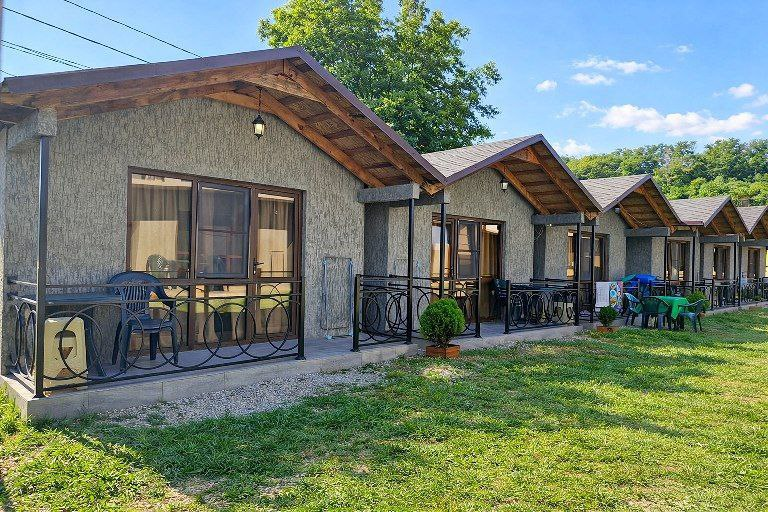
"ДЮНА" домики
🏖️4 минуты до пляжа, песчано-галечный

"ЗЕЛЕНЫЙ ДВОРИК" домики и номера
🏖️ 3 мин до пляжа (песок/мелкая галька)
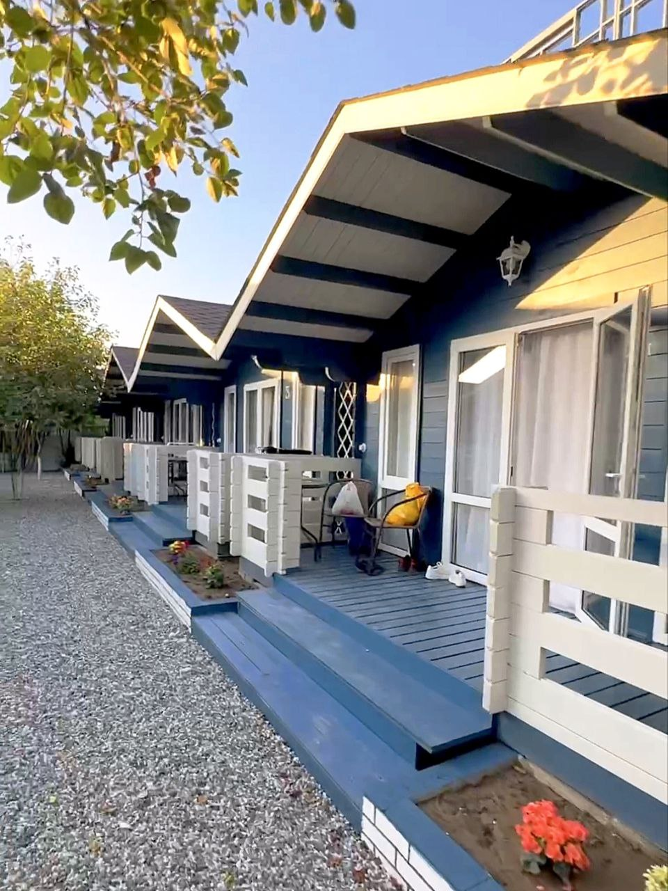
"КАВО ДЕ БУКСО" домики
🏖️🌲 5 мин до пляжа (сосновый галечный)
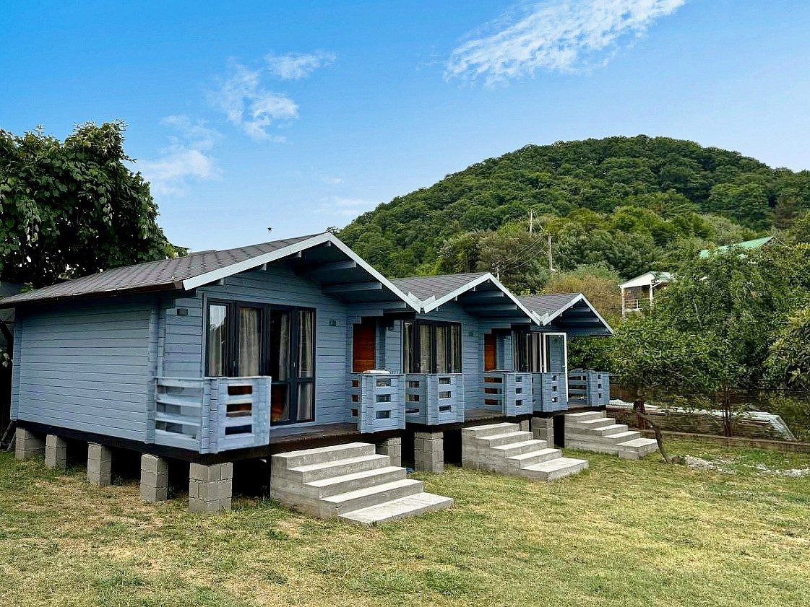
"МАДЛЕНА" домики
🏖️ 3 мин до пляжа (песок/мелкая галька)

"МОРЕОН" домики
🏖️ 1 мин до пляжа (песок/мелкая галька)

"ПШАДА" отель с питанием у соснового пляжа
🏖️🌲 3 мин до пляжа (сосновый галечный)

"РИВЬЕРА" домики на пляже
🏖️ 0 мин до пляжа (песок/мелкая галька)
"СОЛУНА" домики и номера
🏖️4 минуты до пляжа, мелкая галька/песок
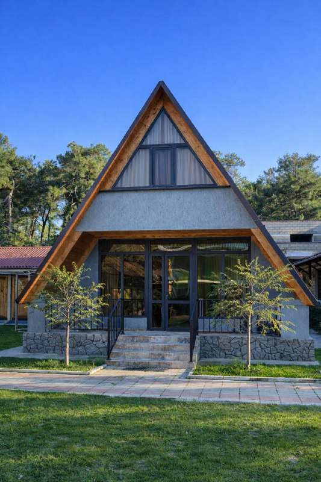
"ТИС" коттеджи у заповедника
🏖️🌲 1 мин до пляжа (сосновый галечный)

"ХЭППИ ЛЭНД" домики двухэтажные
🏖️ 1 мин до пляжа (мелкая галька/песок)
ПИЦУНДА
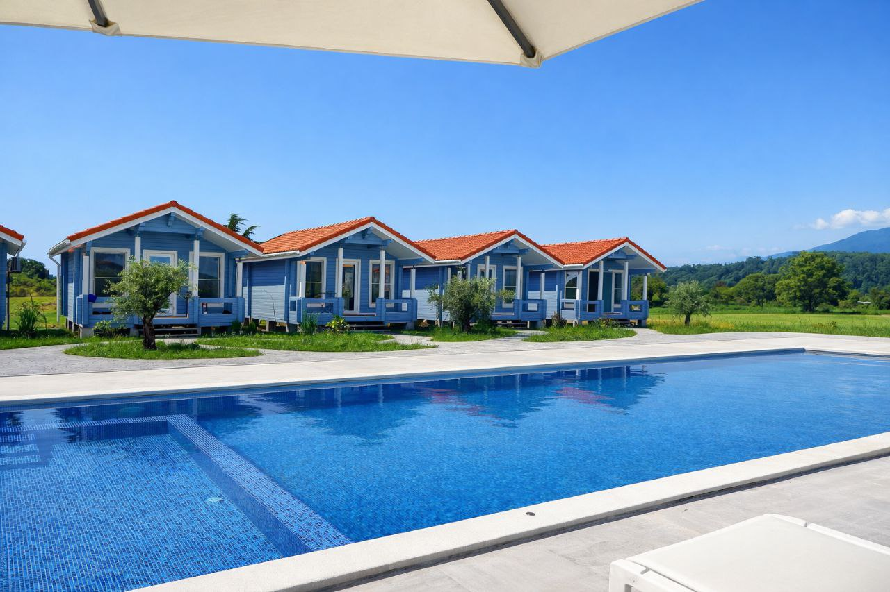
"БЕЛАЯ ЛОШАДЬ" эко-комплекс с бассейном и собственной конюшней
🏖️🌲 15 мин до пляжа (сосновый галечный)

"ДАМИРА" отель в центре города
🏖️🌲 15 мин до пляжа (сосновый галечный)
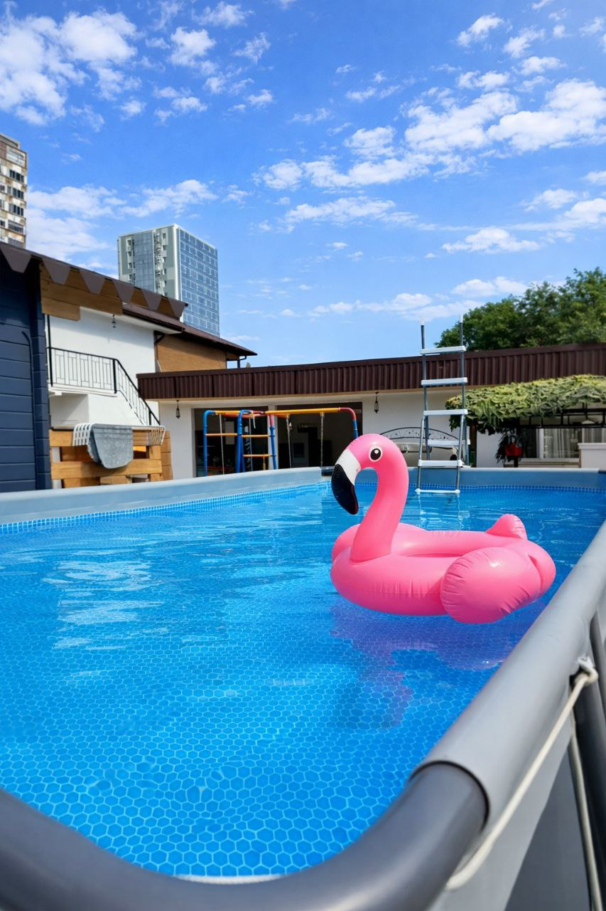
"МИРА" домики и номера у озера
🏖️🌲 23 мин до пляжа (сосновый галечный)

"САМШИТ" домики и номера у заповедника
🏖️🌲 2 мин до пляжа (сосновый галечный)

"САН ПИНО" домики деревянные с бассейном
🏖️🌲 5 мин до пляжа (сосновый галечный)
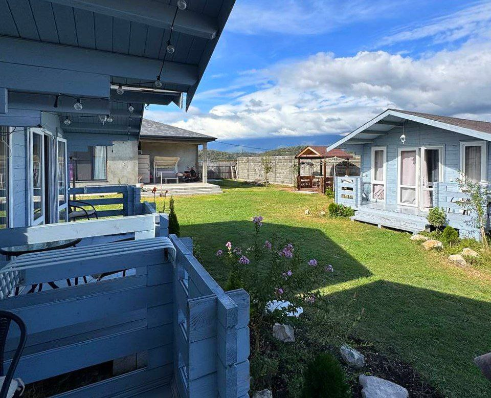
"САЯ" домики
🏖️🌲 20 мин до пляжа (сосновый галечный)

"ЭКО ХАУС ПИТИУНТ" домики с бассейном
🏖️🌲7 мин до пляжа (сосновый галечный)
ГАГРА
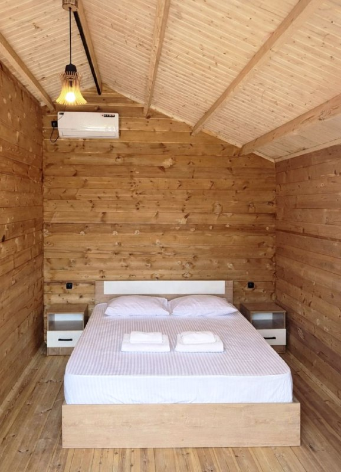
"АМОР" домики с бассейном
🏖️ 4 мин до пляжа (галечный)

"БОХО" коттеджи у моря с бассейном и баней
🏖️ 0 мин до пляжа (галечный)

"КРЫЛЬЯ" домики видовые двухкомнатные
🏖️ 15 мин до пляжа (галечный)
АЛАХАДЗЫ
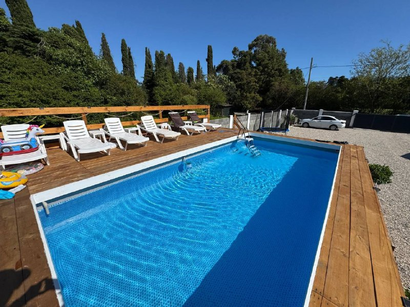
"ГРЕЙ ХАУС" домики с бассейном
🏖️ 9 мин до пляжа (галечный)

"ГРИН ВИЛЛАДЖ" домики
🏖️🌲 5 мин до пляжа (сосновый галечный)
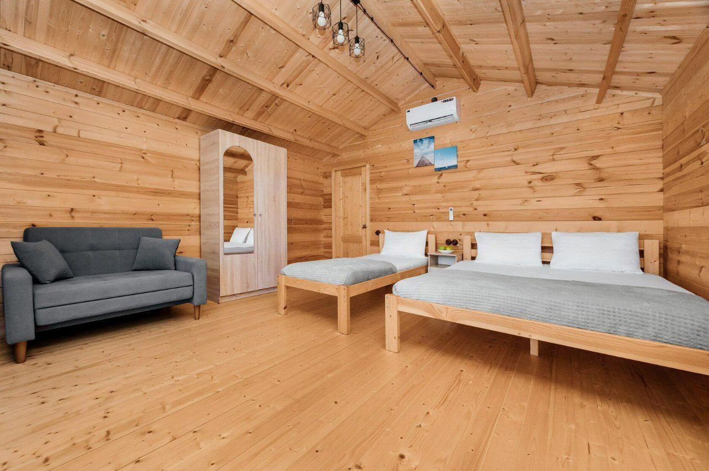
"ИРСЕН" домики в Алахадзы
🏖️ 10 мин до пляжа (галечный)
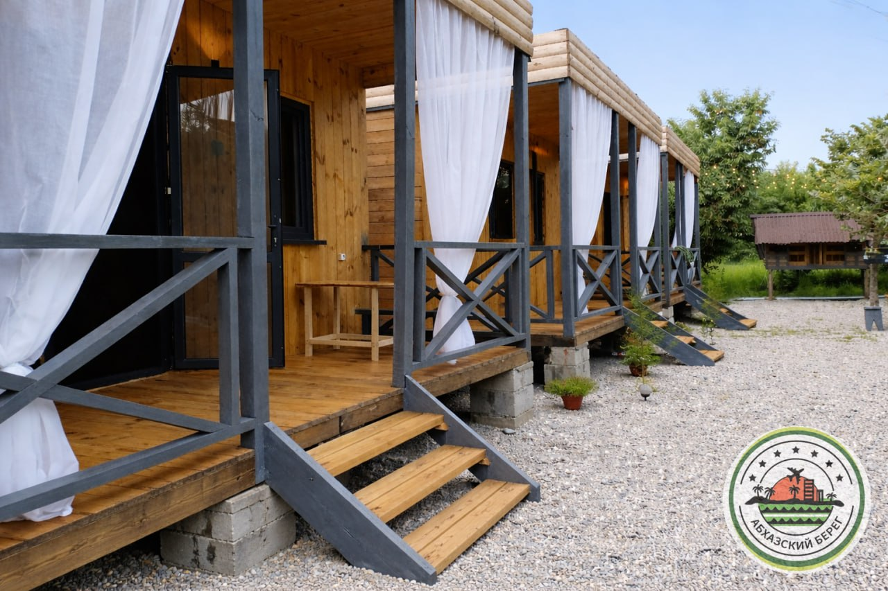
"РУСАНА" эко-домики
🏖️ 13 мин до пляжа (галечный)
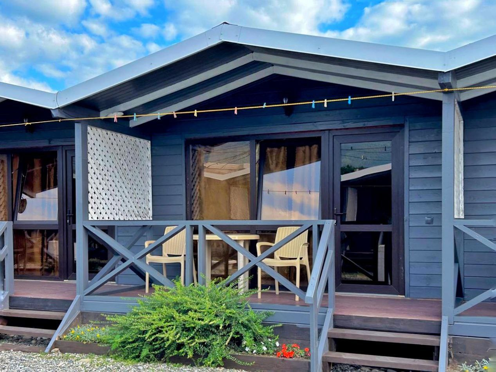
"САБИНА" домики у моря
🏖️ 0 мин до пляжа (галечный)
ГУДАУТА
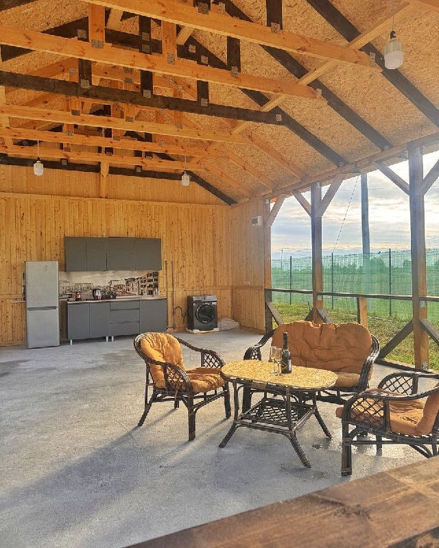
"ЛЕОН" коттеджи в тихом районе
🏖️ 3 мин до пляжа (песчано-галечный)
"ЭСМА" домики с бассейном в Гудауте
🏖️ 7 мин до пляжа (галечный)
НОВЫЙ АФОН
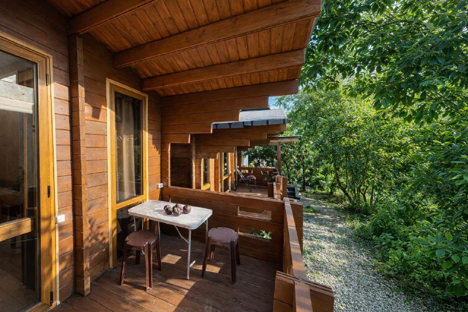
"ДЕЛЬФИН" домики
🏖️ 4 мин до пляжа (галечно-песчаный)

"МАНДАРИНОВЫЙ ДВОРИК" дом под ключ
🏖️пляж в 15 минутах пешком, галечный

"СИСАЙД" домики
🏖️ 1 мин до пляжа (галечный)
СУХУМ
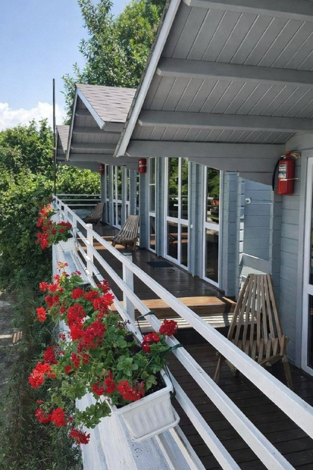
"В СИНОПЕ" домики
🏖️ 5 мин до пляжа (песок/мелкая галька)
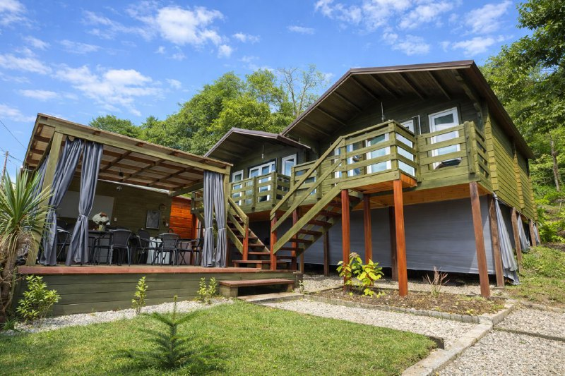
"ГРИН ХАУС" домики
🏖️6 мин до пляжа (песчаный)
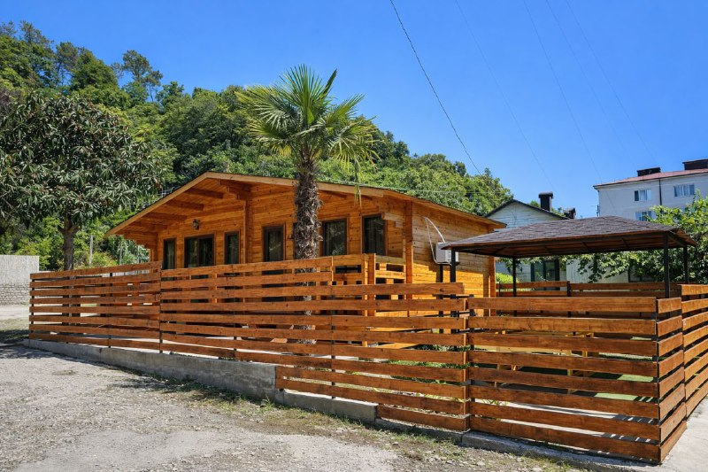
"ДЕМИ МОККО" - два уютных домика
🏖️ 4 мин до пляжа (песчано-галечный)

"КАШТАК" - домики в зеленом уголке
🏖️ 5 мин до пляжа (песчано-галечный)
"МОККО БРИЗ" два домика
🏖️ 4 мин до пляжа (песчано-галечный)
"ОАЗИС" апартаменты с кухней
🏖️ 5 мин до пляжа (песчано-галечный)
"ОАЗИС" вилла в Сухуме
🏖️ 5 мин до пляжа (песчано-галечный)

"СИА ЛЕНД" база отдыха
🏖️ 3 мин до пляжа (мелкогалечный)
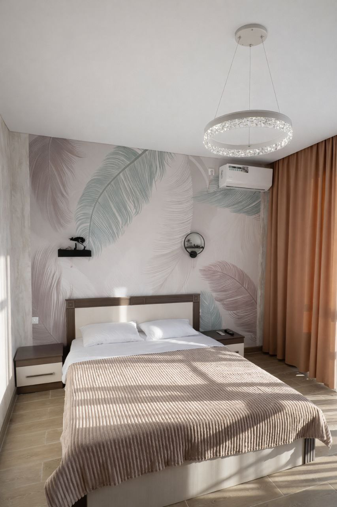
"СИНОП ХАУС" коттеджи
🏖️ 5 мин до пляжа (песок)
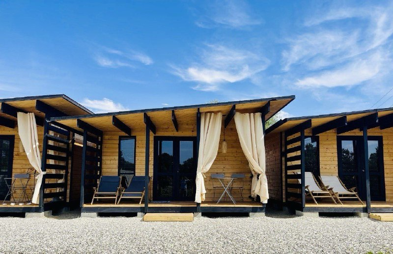
"ФЬЮЖН" три домика с лаунж-зоной
🏖️ 10 мин до пляжа (галечный)
ЦАНДРИПШ
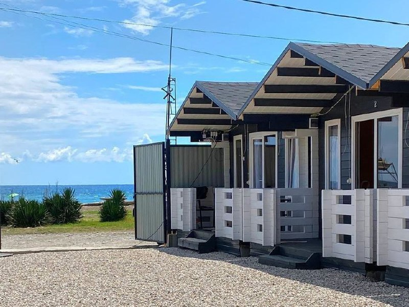
"АЛМА" домики на берегу
🏖️ 0 мин до пляжа (галечный)
"МИМИ" домики с видом на горы
🏖️ 5 мин до пляжа (сосновый галечный)

"ЭКОХОУМ" коттедж-отель
🏖️ 5 мин до пляжа (мелкогалечный)